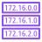

VPC Route Server とは？
VPC の中で動くファイアウォールなどのアプライアンスと BGP で会話し、 受け取った経路を VPC のルートテーブルへ自動で書き込む マネージドサービスです。
😩 これまで
アクティブ機が落ちたら、ヘルスチェック + Lambda などの自作スクリプトで
aws ec2 replace-route を実行してルートテーブルのターゲットを書き換える必要がありました。
- スクリプトの保守が大変
- 検知・切替が遅い／漏れる
- ルートテーブルが増えるほど複雑に
😊 Route Server なら
アプライアンスが「この宛先は私に送って」と BGP で広告するだけ。 Route Server が最適な経路を選んでルートテーブルに反映し、障害時は自動で切り替えます。
- 標準プロトコル (BGP) なのでアプライアンスの機能をそのまま使える
- BFD で高速に障害検知
- 複数のルートテーブルへまとめて反映
登場人物 (構成要素)
- Route Server
- 本体。Amazon 側の ASN を持ち、VPC に 関連付け (associate) して使います。
- Route Server エンドポイント
- サブネット内に作られる BGP の「話し相手」。サブネットの IP アドレスを持つネットワークインターフェイス (ENI) として作られます。冗長化のため 異なる AZ に 2 つ以上 作るのが基本です。
- Route Server ピア
- エンドポイントと BGP セッションを張る相手 (アプライアンス) の定義。ピアの IP、ASN、障害検知方式 (BFD / BGP キープアライブ) を指定します。

伝播 (propagation)- どのルートテーブルに経路を書き込むかの設定。有効化したルートテーブルにだけ経路が入ります。
- RIB
- Routing Information Base。ピアから受け取った 全ての 経路。
- FIB
- Forwarding Information Base。RIB から選ばれた ベストパス。これがルートテーブルに反映されます。
動作の流れ
- 1作成と関連付け
Route Server を作成し VPC に関連付ける - 2エンドポイント
各 AZ のサブネットにエンドポイントを作る - 3伝播
経路を書き込むルートテーブルを選ぶ - 4ピア & BGP
アプライアンスとの BGP セッションが確立 - 5RIB → FIB
受信経路からベストパスを選択 - 6ルートテーブル更新
ターゲット = アプライアンスの ENI
経路の選ばれ方 (このシミュレーターのモデル)
同じ宛先プレフィックスを複数のピアが広告したとき、次の順でベストパスを 1 つ選びます。
- AS_PATH が短い 経路を優先 (AS_PATH プリペンドで意図的に長くして優先度を下げられる)
- MED が小さい 経路を優先
- それでも同じならピア IP が小さい方 (このシミュレーター独自のタイブレーク)
障害検知: BFD と BGP キープアライブ
| BGP キープアライブ | BFD | |
|---|---|---|
| しくみ | BGP のキープアライブが一定時間 (ホールドタイム) 届かなければダウンと判断 | 軽量な死活監視パケットを高頻度でやり取り |
| 検知速度 | 遅い (数十秒オーダー) | 速い (秒未満〜数秒) |
| このラボでの値 | 30 秒 | 1 秒 |
検知するまでの間は、落ちたアプライアンスへの経路がルートテーブルに残り続けるので通信は ブラックホール になります。
経路の永続化 (Persist routes)
全ての BGP セッションが切れても、直前の経路を RIB/FIB に保持し続ける機能です。 セッションが戻ってから指定時間 (1〜5 分) 待ってから保持を解除します。 Route Server 側のメンテナンスなどで全セッションが一時的に切れても、アプライアンスが生きていれば通信を続けられます。
※ このアプリは学習用のシミュレーターです。タイマー値や細かな挙動は単純化しており、実際の AWS とは異なります。 最新の仕様は AWS 公式ドキュメント「Dynamic routing in your VPC with VPC Route Server」を確認してください。